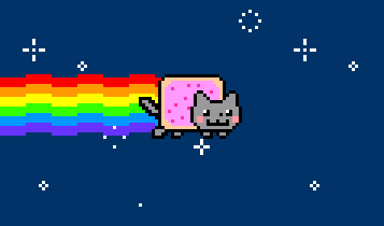

🌐 Google
🗑️ MEMZ.exe
Google
MEMZ.exe
A problem has been detected and Windows has been shut down to prevent damage.
MEMZ.EXE has caused an infinite recursion of regret.
Press any key to uninstall reality.
